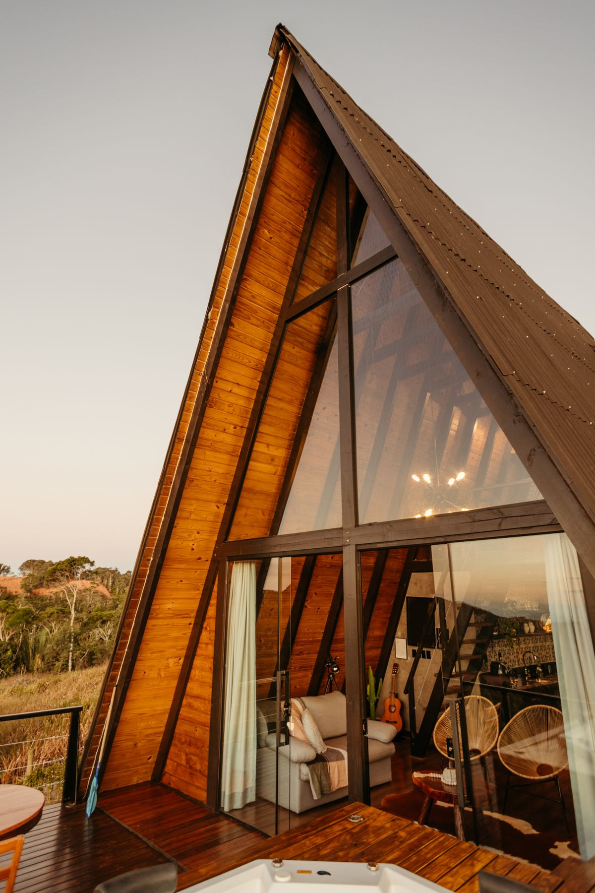
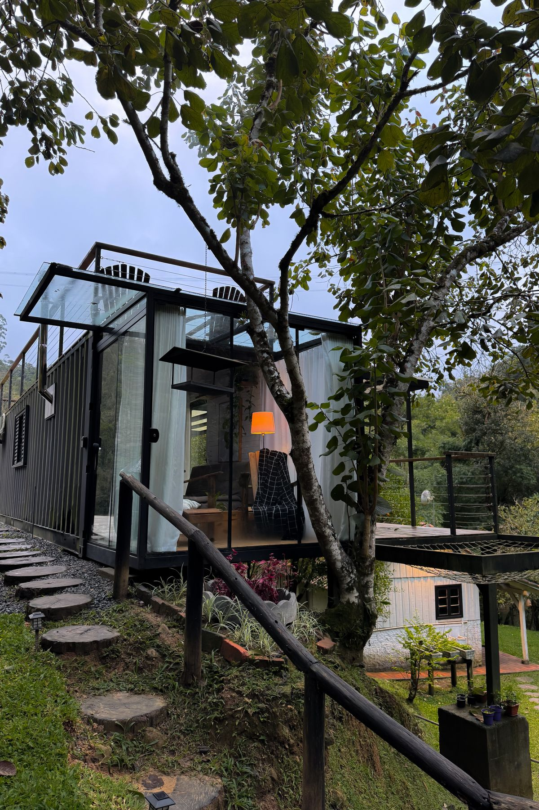
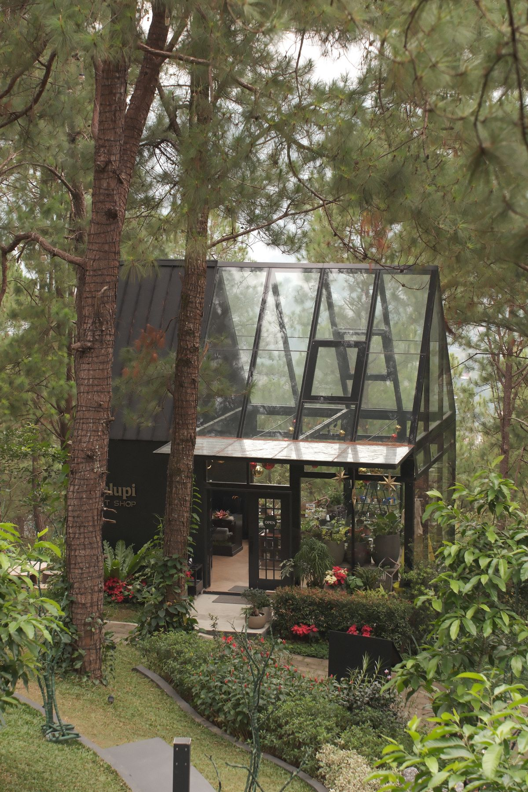

Casa Encina
Madera y vidrio · Cáceres

Arquitecto y artista · Valle del Jerte
Casas que dejan entrar el paisaje.
Casas de campo de madera, acero y vidrio.
Valle del Jerte, Extremadura (España).
Madera local.
Estructura de acero.
Luz a través del vidrio.
Tomás Arévalo es arquitecto y artista en el Valle del Jerte, Extremadura (España), especializado en casas de campo de madera, acero y vidrio.
Arquitecto con 15 años de experiencia. Diseña viviendas rurales que combinan madera local, estructura de acero y grandes superficies de vidrio para integrar la casa en la naturaleza.
Ver trayectoriaSe titula como arquitecto.
Abre su estudio propio.
Madera y vidrio · Cáceres

Acero y vidrio · Ávila

Madera, acero y vidrio · Valle del Jerte

Exposición
Centro Cultural de Plasencia
Conferencia
Colegio de Arquitectos de Madrid